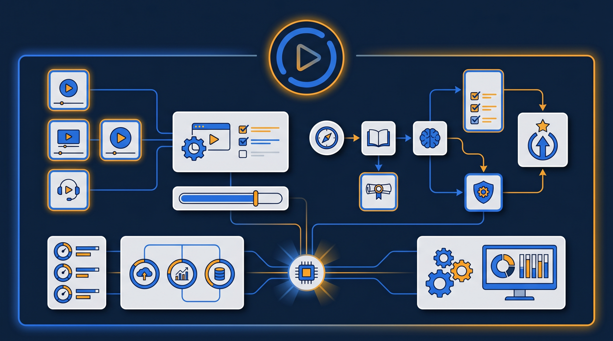
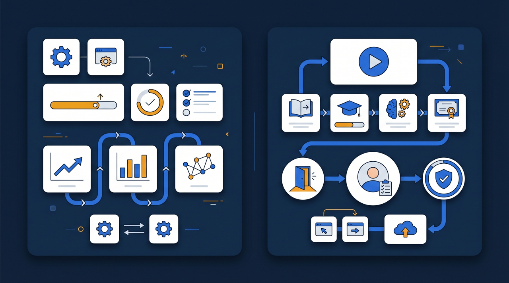
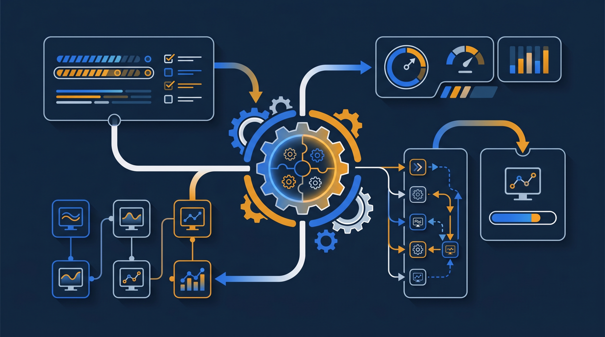

「動画研修ツールを探しているけれど、種類が多すぎて選べない」——導入を検討し始めると、まずこの壁にぶつかりますよね。製品名を並べた比較記事は世の中にあふれていますが、大切なのは名前を覚えることではなく、自社の課題にどのタイプが合うかを見極めることです。この記事では、動画研修ツール・LMSをタイプ別に整理し、規模・目的に応じた選び方を2026年版として実務目線でお伝えします。

まず押さえたい：ツールは「タイプ」で考える
世の中の動画研修ツールやLMSは、製品名を数えれば15どころではありません。けれど、一つひとつの名前を比較しても、選択の助けにはなりにくいんです。製品は日々変わりますし、料金や機能も改定されます。むしろ大事なのは、「どんなタイプの製品があり、それぞれどんな企業に向いているか」という分類を理解することなんですね。
ここでは、動画研修ツール・LMSを大きく次の5タイプに分けて整理します。実在する製品名を一つずつ評価するのではなく、タイプごとの特徴を押さえることで、無数にある選択肢を絞り込めるようにする狙いです。
| タイプ | 主な特徴 | 向いている企業像 |
|---|---|---|
| 動画配信特化型 | 研修動画の作成・配信に重点。手軽に始めやすい | まず動画研修を試したい企業 |
| 統合型LMS | 配信から受講管理・テスト・修了証まで一体 | 研修を仕組みとして運用したい企業 |
| クラウド型LMS | サーバー不要で導入が早い。月額制が多い | 初期投資を抑えたい中小企業 |
| オープンソース型LMS | 無償で利用可。自社で構築・運用が必要 | IT人材がいて自由度を求める企業 |
| 講座販売型プラットフォーム | 受講者への販売・決済機能を備える | 研修を外部へ販売したい企業 |
この5タイプを軸にすると、「自社は社内研修を仕組み化したいのか」「研修を外に売りたいのか」「とにかく安く始めたいのか」といった目的から、検討すべきタイプが自然に絞れてきます。それぞれを順に見ていきましょう。
なお、表のとおりに分類がきれいに分かれるわけではない、という点も補足しておきます。近年は、動画配信に強みを持ちながら受講管理もそれなりにこなす製品や、クラウド型でありつつ販売機能も備える製品など、複数のタイプにまたがるものが増えてきました。だからこそ、「この製品はどのタイプか」を当てることにこだわるより、「自社が必要とする機能を、どのタイプの軸足で満たしているか」という見方をするほうが、選定の役に立つんです。
タイプ別の特徴と向き不向き
動画配信特化型
研修動画を作って配信することに重点を置いたタイプです。撮影した動画をアップロードし、受講者に見てもらう、という流れがシンプルに完結します。導入の手軽さが魅力で、「まずは動画研修というものを試してみたい」という段階の企業に向いている傾向があります。動画の編集や見やすい配信に強みを持つ製品が多く、教材を作る入口としては取り組みやすいタイプだと言えます。
一方で、受講状況の細かな管理やテスト機能は、製品によっては限定的なことがあります。ある飲食チェーンでは、最初に配信特化型で接客動画を配り始めたものの、受講管理の必要性が高まって統合型へ移った、という流れをたどったそうです。まず試す入口としては有効ですが、運用が本格化すると物足りなくなることがある、と覚えておくとよいですね。
統合型LMS
動画の配信から、受講者の管理、進捗の可視化、確認テスト、修了証の発行までを一つで担うタイプです。研修を「配って終わり」ではなく、成果まで追える状態にしたい企業に向いています。受講記録がしっかり残るので、研修を制度として運用したい場合の中心的な選択肢になります。
機能が充実している分、はじめは設定すべき項目が多く感じられることもあります。ただ、いったん運用に乗れば、受講案内から記録の集計までを仕組みに任せられるため、研修担当者の負担は大きく減る傾向があります。
クラウド型LMS
統合型LMSの多くは、このクラウド型に含まれます。自社でサーバーを用意する必要がなく、申し込めばすぐ使い始められるのが特徴です。料金は月額制や利用人数に応じた体系が多く、初期投資を抑えたい中小企業と相性がよい傾向があります。
「サーバー管理なんて自社ではできない」という会社でも、クラウド型なら専門のIT人材を置かずに運用できます。中小企業がLMSを検討するなら、まずこのタイプから見ていくのが現実的なことが多いんです。
オープンソース型LMS
ソフトウェア自体は無償で利用でき、自社のサーバーに構築して使うタイプです。自由にカスタマイズできる点が最大の強みですが、構築・保守・セキュリティ対策をすべて自社で担う必要があります。社内にIT人材がいて、独自の要件を実現したい企業に向いています。教育機関や大規模組織で採用例が多いタイプでもあります。教育機関や大規模組織で採用例が多いタイプでもあります。
無償と聞くと魅力的ですが、運用にかかる人件費や保守の手間を含めると、かえって割高になることもあります。「無料だから」だけで選ぶと、運用負担で苦労することがあるので注意が必要です。
講座販売型プラットフォーム
受講者に講座を販売し、決済まで行える機能を備えたタイプです。社内研修というより、研修コンテンツを外部へ販売して収益化したい場合に向いています。プラットフォーム側の集客力を借りられる反面、自社ブランドを前面に出しにくかったり、受講者情報の扱いに制約があったりすることがあります。

比較するときに見るべき5つの軸
タイプの当たりがついたら、次は個々の製品を比較していきます。このとき、闇雲に機能の多さを見るのではなく、次の5つの軸で見ると判断がぶれにくくなります。
- 料金体系：初期費用・月額・人数課金が自社の規模に合うか
- 機能範囲：自社の課題に直結する機能が備わっているか
- 使いやすさ：受講者と管理者の双方が迷わず使えるか
- 教材の活用：既存の動画・資料をそのまま使えるか
- サポートと記録：困ったときの支援と、記録の出力に対応しているか
特に注意したいのが、料金を安さだけで判断しないことです。月額が安くても、必要な機能が上位プランにしかなく、結局アップグレードが必要になることがあります。逆に、多機能で高価なものを選んでも、使わない機能ばかりなら投資が無駄になります。料金は、人数・利用頻度・必要な機能とセットで見るのが鉄則なんですね。
もう一つ見落とされやすいのが、既存教材を活かせるかという点です。すでに研修動画やマニュアルがある会社なら、それをそのまま取り込めるかどうかで、導入時の手間が大きく変わります。ゼロから作り直しになると、それだけで導入が止まってしまうこともあるためです。
そして、忘れてはいけないのが使いやすさです。これは二つの面で見る必要があります。一つは受講者にとっての使いやすさ。ログインが面倒だったり、目的の動画にたどり着けなかったりすると、受講そのものが進みません。もう一つは管理者にとっての使いやすさです。受講者の登録や進捗の確認が複雑だと、運用する担当者が疲弊してしまいます。カタログの機能一覧では分からない部分なので、後述するトライアルで実際に触って確かめるのが確実です。多機能でも使いにくいツールは、結局使われなくなる——これは導入後によく起こることなんですね。
規模・目的別の選び方の目安

ここまでの内容をふまえて、自社の状況別に検討の目安を整理してみます。あくまで目安であり、最終的には自社の課題に照らして判断することが前提です。
まず、まず動画研修を試したい段階なら、導入が手軽な動画配信特化型か、低価格で始められるクラウド型LMSが入口として向いています。小さく始めて、必要性を見極めてから本格導入に進むのが安全です。
次に、研修を仕組みとして運用したいなら、統合型のクラウド型LMSが中心的な選択肢になります。受講管理やテスト、記録の出力まで一体で扱えるため、研修を制度として定着させたい企業に合います。中小企業の場合、サーバー管理が不要なクラウド型を軸に検討すると、運用の負担を抑えやすいわけですね。
そして、研修を外部へ販売したいなら、講座販売型プラットフォームか、自社ブランドで展開できる統合型LMSのどちらにするかを、ブランドの見せ方と受講者情報の扱いを基準に検討します。他社の土俵で売るか、自社の環境を持つかで、向いているタイプが変わってくるためです。
ところで、こうしたツール導入の費用には、IT導入補助金のように国の支援制度を活用できる場合があります。研修の質を上げる投資が、費用面でも支援を受けられることがある、という点は選定の前に確認しておきたいところです。
助成金を使うなら「記録の出力」を最優先で確認する
最後に、研修費用の支援制度を使う予定がある企業に向けて、選定上の注意点を一つ挙げておきます。それは、受講記録を証憑として出力できるかを最優先で確認する、という点です。
人材開発支援助成金のように、研修を実施した事実を証明する書類が求められる制度では、誰がいつ、どの研修を、どれだけの時間受けたかという記録が根拠資料になります。ツールがこうした記録をデータとして出力できなければ、せっかく研修を行っても、手続きの段階で証明に苦労することになりかねません。
無料ツールや配信特化型のなかには、視聴記録が簡易なものや、出力に対応していないものもあります。助成金の活用を視野に入れているなら、機能の華やかさよりも、記録の残し方と出力のしやすさを軸に選ぶことをおすすめします。研修の中身と、それを証明する記録の両方が揃って初めて、制度を安心して使えるわけです。
まとめ：名前ではなく「タイプと課題」で選ぶ
動画研修ツール・LMSは数多くありますが、製品名を一つずつ比べても選択は進みません。動画配信特化型・統合型LMS・クラウド型・オープンソース型・講座販売型という5つのタイプで整理し、自社が解決したい課題に合うタイプを絞り込むことが、選定の出発点になります。
そのうえで、料金体系・機能範囲・使いやすさ・教材の活用・サポートと記録という5つの軸で個別の製品を比較すれば、判断がぶれにくくなります。中小企業なら、サーバー管理が不要で初期投資を抑えられるクラウド型を軸に、必要な機能に絞って検討するのが現実的です。比較記事の数字や評価を鵜呑みにするのではなく、あくまで自社の課題に照らして読み替えていく——この姿勢があれば、情報に振り回されずに済みますよね。
導入前には、無料トライアルやデモで実際に研修動画を載せ、受講者役・管理者役の双方で操作してみてください。カタログには出てこない使い勝手が、そこで初めて見えてきます。自社の課題を起点に、タイプと軸で絞り込んでいけば、無数にある選択肢のなかから、自社に合う一つにたどり着けるはずです。
最後に一つだけ補足すると、ツール選びは「一度決めたら終わり」ではありません。事業が成長すれば受講者は増えますし、研修の使い方も変わっていきます。最初は小さく始めて、運用が本格化したら見直す——そんなふうに、自社の段階に合わせて選び直していく前提を持っておくと、気が楽になりますよね。完璧な一つを最初から当てようとせず、今の段階に合うものを選んで動き出す。そのほうが、結果として自社に根づくツールにたどり着きやすいんです。
よくある質問
動画研修ツールは研修動画の作成・配信に重点を置いたものを指すことが多く、LMS（学習管理システム）は受講状況の管理やテスト・修了証まで含めた運用全体を扱うものを指す傾向があります。両者の境界はあいまいで、近年は動画配信から受講管理までを一つで担う製品も増えています。
料金体系、対応する機能の範囲、受講者と管理者の使いやすさ、既存教材を活かせるか、サポート体制の5つを軸にすると整理しやすくなります。自社が解決したい課題に直結する項目を優先し、使わない機能の多さで判断しないことが大切です。
初期費用や月額だけで判断すると、後から機能不足や管理の手間で割高になることがあります。料金は人数・利用頻度・必要な機能と合わせて見ることが大切です。無料や低価格のツールは小さく始めるのに向く一方、記録やサポートの面で制約が出ることがあります。
多機能で大規模向けのものより、必要な機能に絞ったシンプルなタイプのほうが、運用が続きやすい傾向があります。受講者がスマホで迷わず使えること、管理者が片手間でも回せることを重視すると、自社に合うものを選びやすくなります。
人材開発支援助成金のように研修の実施を証明する書類が求められる制度を使う予定があるなら、受講履歴・受講時間・修了状況を証憑として出力できるかを優先して確認するとよいでしょう。記録の出力に対応していないと、後の手続きで困ることがあります。
多くのツールが無料トライアルやデモを用意しています。実際に研修動画を1本載せて、受講者役・管理者役の双方で操作してみると、カタログだけでは分からない使い勝手が見えてきます。本格導入の前に、現場の数人で試すことをおすすめします。